가스톡(GasTalk)
10만대 원격검침단말 대상
대규모 관제 시스템 구축
1.핵심 비즈니스 지표를 운영 현황 데이터 시각화 대시보드 구축
2.원격검침단말의 Raw 데이터를 가공하여 실시간 사용자 분석 UI 구현
3.실시간(Real-time) 데이터 처리
4.벌크로리 원격검침 및 실시간 위치 트래킹 시스템 통합 및 최적화
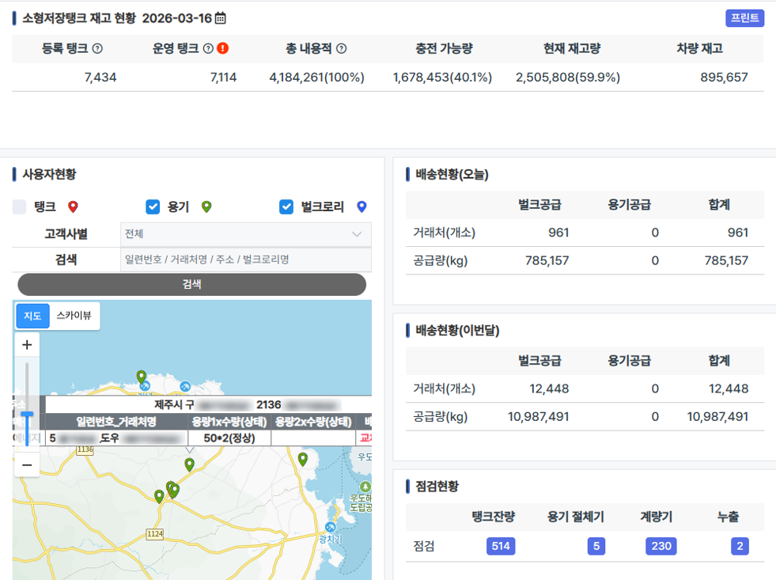
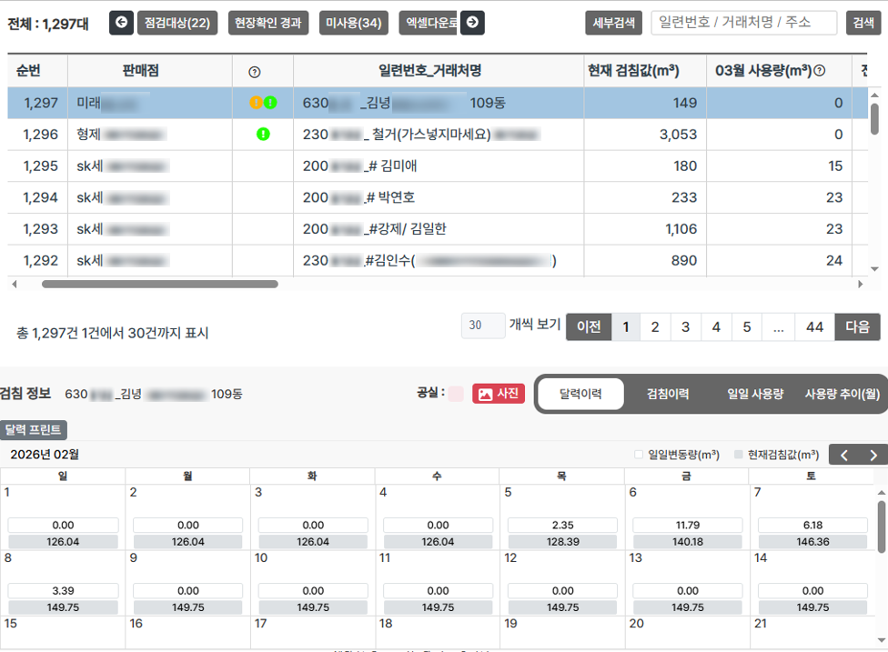
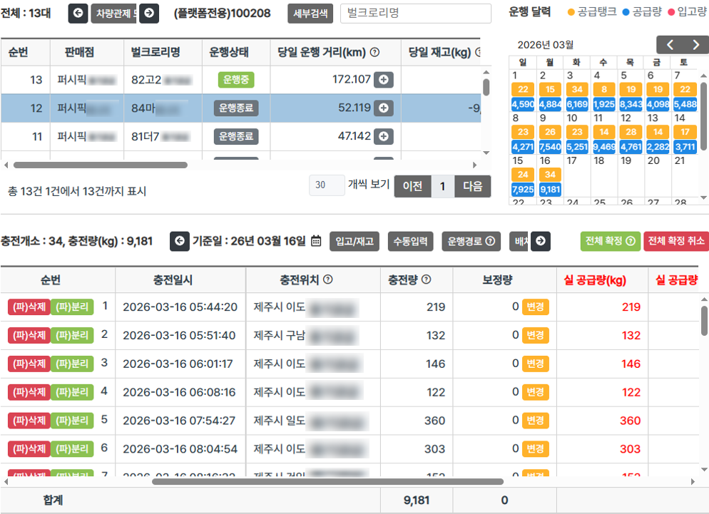
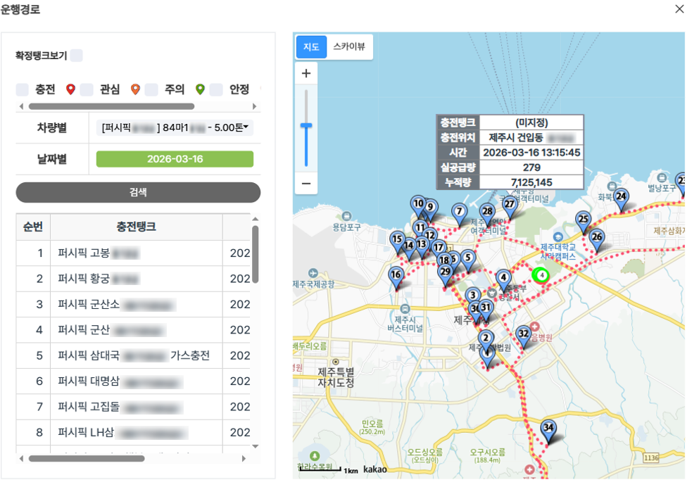
한 줄 요약
3천여 명의 사용자를 수용하는 LPG 산업 특화 원격검침 관제 전 영역(DB/Server/Web) 통합 구현
주요성과
1. 엔드투엔드(End-to-End) 풀스택 서비스 구현
- 비즈니스 로직의 안정성을 확보한 백엔드 API 설계 및 사용자 중심의 직관적인 프론트엔드 구축과 성능 향상을 위한 Query 설계
2. 인프라 가용성 확보 및 트래픽 제어 최적화
- 서버 모니터링 및 부하 분산을 통한 시스템 안정성 강화 및 데이터 급증 시 안정적인 트래픽 핸들링 구현
3. 대규모 IoT 인프라 관제 및 데이터 핸들링 역량 강화
- 10만 대 규모의 단말 정보 통합 관리
(방대한 인프라의 상태 및 메타데이터를 안정적으로 관리하기 위한 관제 시스템 구현)
- 대용량 검침 데이터 최적화
(10만 대 단말에서 실시간/주기적으로 송·수신되는 방대한 검침 이력 데이터의 무결성을 보장)
4. 요구사항 분석을 통한 서비스 고도화
- 외부 인터페이스 통합 연동
(알림톡, 팩스, SMS 등 다각화된 커뮤니케이션 채널 연동을 통한 사용자 편의성 증대)
- 사용자 경험(UX) 및 인터페이스(UI) 고도화
(시스템의 점진적 개선(Develop)을 통한 가시성 및 조작 편의성 향상)
- 핵심 비즈니스 기능 확장
(관제 시스템과 연계된 자체 이커머스 솔루션 구축 및 서비스 운영 효율화)
난관해결
트래픽 급증으로 인한 DB 병목으로 인해 DB 서버가 다운
Sleep 프로세스가 30분간 유지되어 프로세스를 점유하고 있어 Sleep 프로세스의 유지시간을 30분에서 10분으로 변경 후 DB 병목 해제, 해결 후 최대 1,000개 전체 프로세스를 130~150개로 유지
가스톡 관리자
10만 대 인프라 기반의 자산·정산 통합 운영 시스템 구축
1.고객사별 맞춤형 통합 정산 및 청구 자동화 시스템
2.IPO 회계 기준을 준수한 렌탈 자산 생애주기 관리 및 현황 시스템
3.재무 투명성 강화를 위한 실시간 재고 수불부 모듈
4. 단말기 및 연계 상품의 통합 공급망
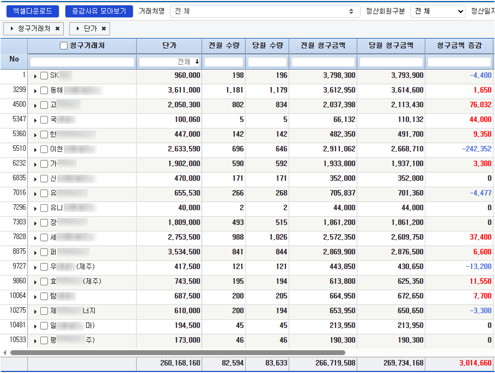
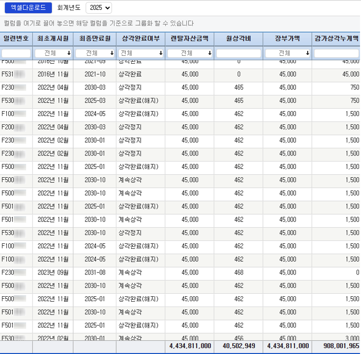
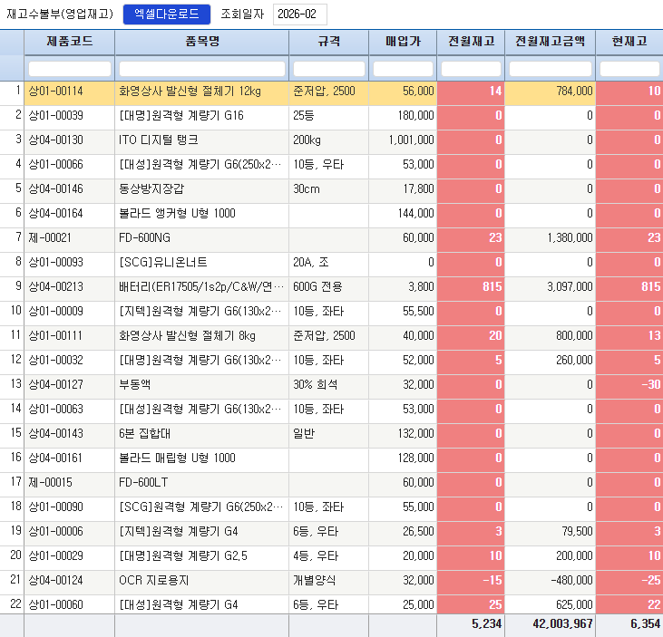
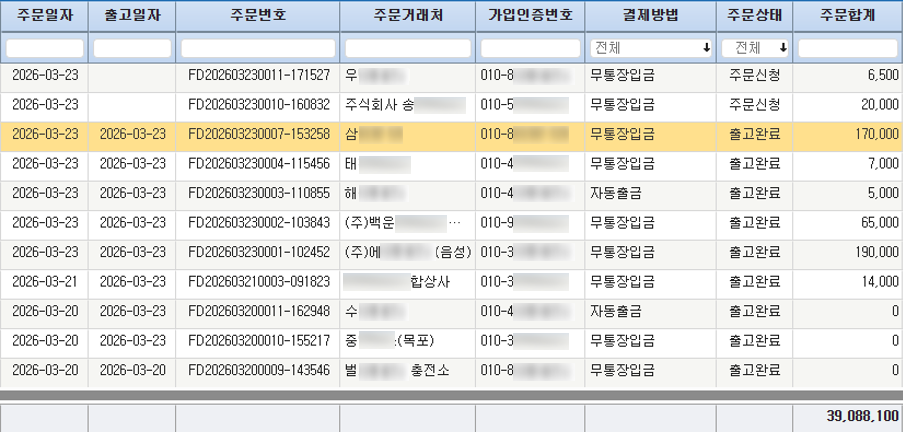
한 줄 요약
현 직장 핵심 자산인 10만 원격검침단말 인프라의 안정적 운영을 위한 전용 관리 시스템 설계 및 엔드투엔드(E2E) 개발 수행
주요성과
1. 프로젝트 전 주기(Full-cycle) 단독 수행 및 리딩
- 1인 체제로 기획, 설계, 개발 및 실제 운영까지 전 과정 주도적 완수
2. 원격검침단말 기반 자동 정산 및 과금 솔루션 개발
- 실시간 단말 데이터를 활용한 거래처별 정산 로직 구현 및 청구 프로세스 자동화
3. 단말기 및 연계 상품의 통합 공급망 관리 플랫폼 구축
- 주문-출고-배송 전 과정을 아우르는 물류 및 유통 관리 시스템 설계
4. 기업 IPO 대응을 위한 회계 정합성 확보 및 자산 관리 시스템 고도화
- 렌탈 자산 현황, 재고 수불부, 수금 스케줄 관리 등 재무 건전성 증명을 위한 핵심 모듈 구현
5. 가스톡 플랫폼 내 쇼핑몰 비즈니스 로직 제어를 위한 통합 어드민 솔루션 구축
- 상품 메타데이터 관리 시스템 및 쇼핑몰 운영 효율화를 위한 고도화된 백오피스 기능 개발
난관해결
성공적인 기업 IPO를 위한 회계 감사 대응용 렌탈 자산 및 재고 수불 관리시스템 도입 과정에서, 회계 부서와의 적극적인 기술 소통을 통해 비즈니스 요구사항을 정확히 분석하고 실질적인 자산 운용 현황 가시화를 실현함
가스인 ERP
69만 대규모 소비처 컨트롤 최적화를 위한 LPG ERP 운영
1.사업 인수 후 레거시 코드 분석 및 튜닝
2.사업 확장을 위한 무결성 검증 기반 데이터 마이그레이션 툴 설계,개발,진행
3.LPG ERP 웹 단일 시스템을 APP 설계,개발
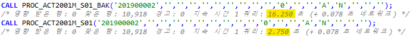
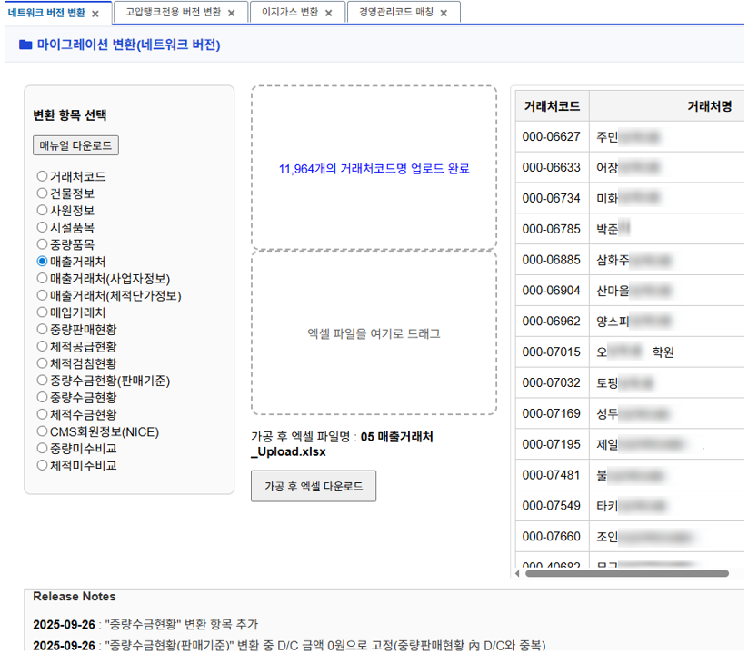
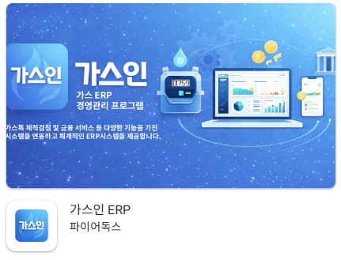
한 줄 요약
LPG ERP 플랫폼 인수 후 시스템 안정화 및 비즈니스 로직 고도화 전담 개발·운영
주요성과
1. 기술 실무 중심의 사업 인수 프로세스 주도
- 사업 이관에 따른 기술 계약 검토 및 외부 API 연동 권한 승계 등 사업 인수 수행
(기여도 80% 이상)
2. 데이터 마이그레이션 진행
- 타사 ERP의 데이터 구조를 정밀 분석하여 이관 프로세스 설계 및 자사 시스템과의 데이터 이관 수행
3. 사용자 요구사항 기반의 비즈니스 로직 고도화
- 실무 사용자의 피드백을 분석하여 LPG 유통 특화 기능 및 운영 효율성 향상을 위한 신규 모듈 설계 및 구현
4. 웹 기반 플랫폼의 모바일 확장 개발
- 기존 LPG ERP 웹 시스템을 모바일 환경으로 확장하여 현장 중심의 접근성을 중요시하여 개발
5. 레거시 코드 분석 및 시스템 안정화
- 인수 초기 성능 저하 요인(느린 쿼리 등)을 튜닝하여 시스템 가용성 확보
난관해결
개발 영역에 대한 사업 양도 부재(양수회사 개발자 부재)로 소스코드,DB,서버에 대한 흐름을 파악하고 이를 바탕으로 운영 안정화를 완수
스마트미터링
6종(열량,온수,난방,수도,전기,가스)검침에 대한 시스템 구축
1.비정형 Raw Data 파싱 및 관리자용 데이터 시각화 인터페이스 구현
2.핵심 비즈니스 지표를 운영 현황 데이터 시각화 대시보드 구축
3.이기종 원격 검침 단말 데이터의 고객사별 일일 배치(Batch) 처리 및 제공
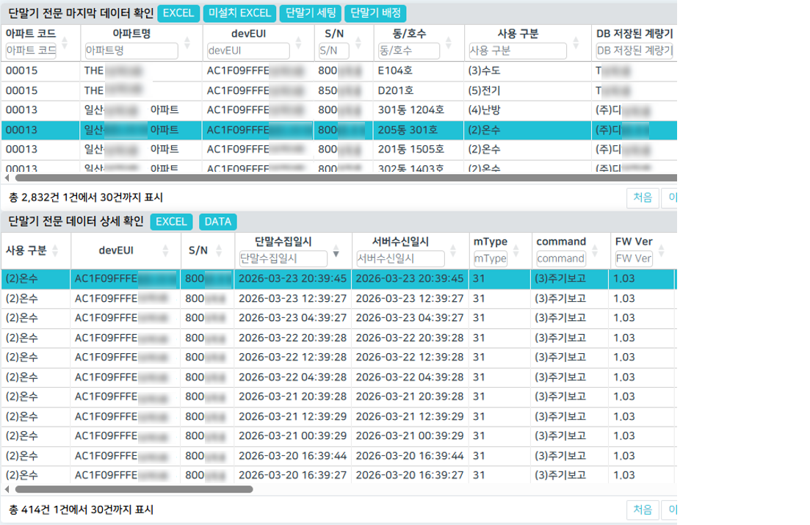
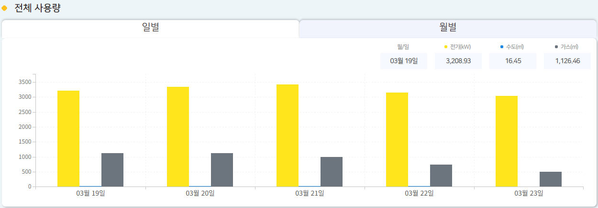
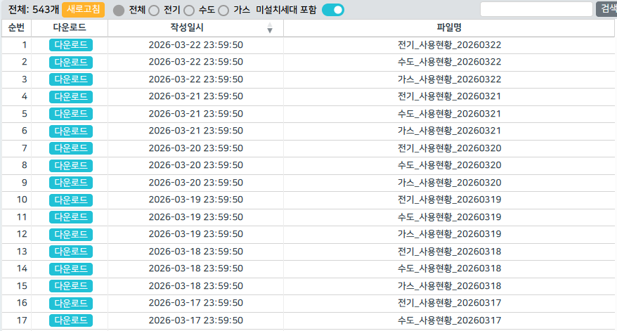
한 줄 요약
가스 검침(가스톡)에 사업 확장으로 6좀 검침 전 영역(로우데이터 처리/DB/Server/Web) 통합 구현
주요성과
1. 단말 로우데이터 처리
- 각 계량기 사에 프로토콜을 확인하여 IoT 단말이 올린 로우데이터를 처리
2. 확장성을 고려한 데이터베이스 설계 및 최적화
- 단말 데이터 수집 및 이력 관리를 위한 효율적인 DB 스키마 설계 및 인덱스 최적화 수행
3. 엔드투엔드(End-to-End) 풀스택 서비스 구현
- 비즈니스 로직의 안정성을 확보한 백엔드 API 설계 및 사용자 중심의 직관적인 프론트엔드 구축과 성능 향상을 위한 Query 설계
난관해결
계량기사 별 상이한 통신 규격(프로토콜)을 분석하여 비정형 패킷 처리 로직을 표준화
소형저장탱크시스템
1억원 규모 정부 과제 총괄 납품
한 줄 요약
LPG 소형 저장탱크 검사 기록 디지털화 및 법정 검사 대행 프로세스 통합 플랫폼 구축(2023.09~12)
주요성과
1. 프로젝트 전 주기(Full-cycle) 단독 수행 및 리딩
- 1인 체제로 기획, 설계, 개발 및 실제 운영까지 전 과정 주도적 완수
2. 정부 과제 행정 및 기술 실무 통합 대응
- 한국엘피가스판매협회중앙회 대상 사업 계획서 수립부터 최종 완료 보고서 채택까지 행정·기술 문서 전담
- 공공 기관 요구 사항에 부합하는 기술 규격 준수 및 검수 통과
3. 오프라인 검사 업무의 디지털 전환(DX) 실현
- 파편화된 검사 기록을 디지털 데이터로 자산화하고, 법정 대행 절차 자동화를 통한 업무 효율성 극대화
거래상황기록시스템
LPG 거래상황기록시스템 유지보수 및 연간 고도화
한 줄 요약
전국 LPG 판매 사업자의 거래 데이터를 수집·분석하여 정부 보고용 통계를 생성하는 공공성 플랫폼 유지보수, 고도화
주요 성과
1. 프로젝트 전 주기(Full-cycle) 단독 수행 및 리딩
- 1인 체제로 기획, 설계, 개발 및 실제 운영까지 전 과정 주도적 완수
2. 연간 고도화 프로젝트 단독 수주 및 장기 파트너십 구축
- 한국엘피가스판매협회중앙회 주관 연간 약 4,000만 원 규모의 고도화 사업 지속 수주
- 안정적인 시스템 운영과 높은 이해도를 바탕으로 매년 사업 연속성 확보 및 고객사 신뢰 구축
3. 정부 정책 대응을 위한 핵심 통계 로직 및 UI/UX 개선
- 매년 변경되는 에너지 정책 및 법정 서식에 맞춘 거래 데이터 기록 로직의 유연한 대응
- 전국 사업자들의 복잡한 거래 데이터를 직관적으로 입력하고 집계할 수 있는 인터페이스 최적화
4. 데이터의 정합성 검증 및 보고 자동화
- 수기 보고 업무를 시스템화하여 데이터 오류 방지 및 행정 처리 시간 단축
LPG 용기유통시스템
LPG 용기유통시스템 유지보수 및 연간 고도화
한 줄 요약
LPG 용기의 생애주기를 QR코드로 추적하고 모바일 안전점검 프로세스를 통합한 실시간 유통 관리 플랫폼 유지보수, 고도화
주요 성과
1. QR코드 기반 이력 관리 최적화 및 시스템 연속성 확보
- LPG 용기 구매부터 충전, 배송, 폐기에 이르는 라이프사이클 데이터의 실시간 추적 로직 구현
- 고객사와의 장기적 신뢰를 바탕으로 연간 고도화 사업을 지속 수주하며 플랫폼 안정성 입증
2. 모바일 중심의 현장 안전점검 및 행정 자동화
- 스마트폰 앱을 활용한 소비설비 안전점검표 작성 및 모바일 전자서명 기능 구현
- 현장 점검 데이터의 즉각적인 서버 적재 및 결과 리포트 자동 생성을 통한 업무 효율성 증대
3. 시스템의 성능 저하를 막고 사고에 대비
- 데이터,첨부 파일(사진)을 이중화하여 안전하게 관리
- 오래된 데이터를 별도 관리하여 사용자에게 신속한 데이터 제공
기업 웹사이트 구축
공식 기업 웹사이트 구축
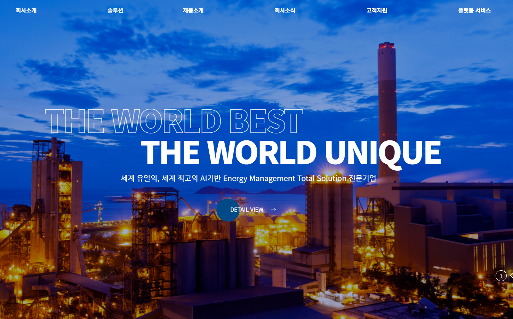
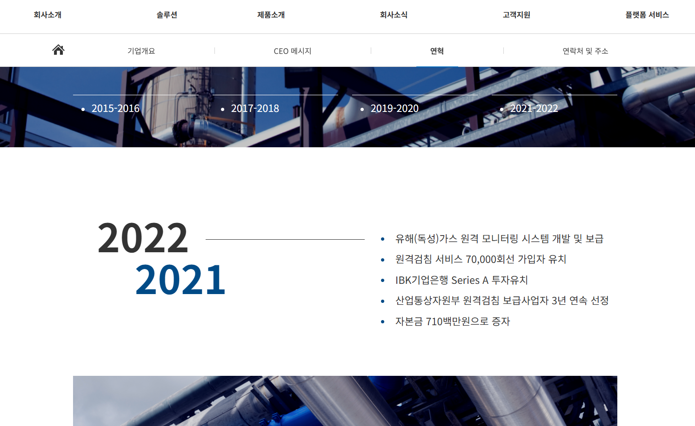
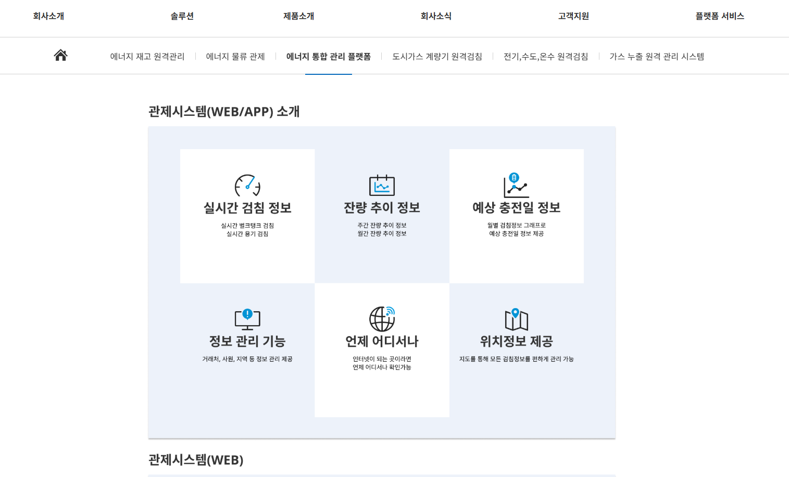
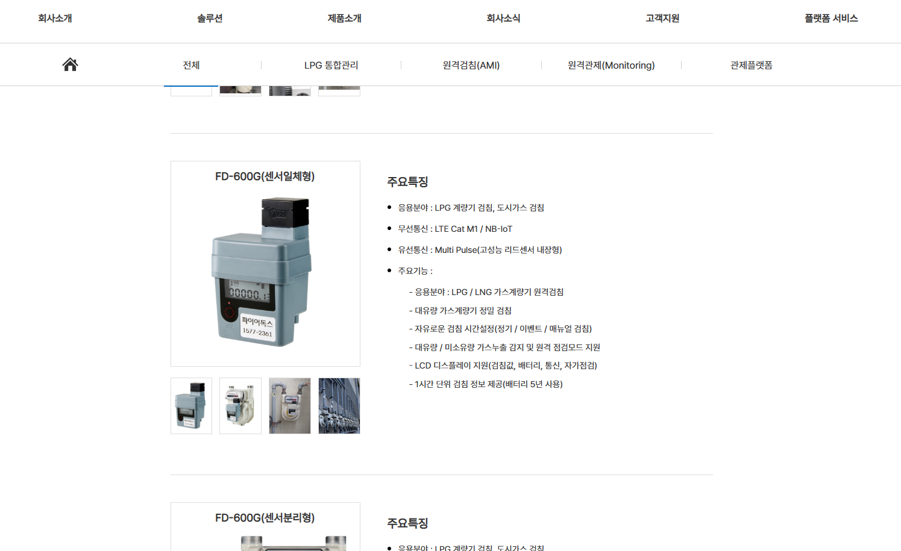
한 줄 요약
솔루션,제품 소개 및 기업 지표, 기업 소개를 통해 고객사으로부터 신뢰도를 확보에 기여한 기업 공식 플랫폼 구축(2023.07~09)
주요 성과
1. 프로젝트 전 주기(Full-cycle) 단독 수행 및 리딩
- 1인 체제로 기획, 설계, 개발 및 실제 운영까지 전 과정 주도적 완수
2. 기업 정체성을 반영한 UI/UX 설계 및 구현
- 에너지 IT 전문 기업의 신뢰감을 줄 수 있는 시각적 디자인 및 사용자 중심의 인터페이스 구축
- 다양한 디바이스 환경을 고려한 반응형 웹 기술 적용으로 최적화된 브라우징 환경 제공
3. 비즈니스 통합 허브 역할의 웹 아키텍처 구축
- 가스톡, 스마트미터링 등 개별 서비스의 접근성을 높인 통합 게이트웨이 설계
- 기업 소식, 공지사항 및 포트폴리오 관리를 위한 효율적인 콘텐츠 관리 시스템 구현